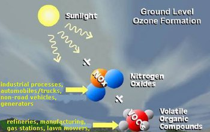
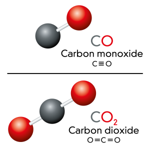

Pollutants make up a large portion of Earth’s atmosphere, this brings up the question, which pollutants are more present in Earth's atmosphere? To begin, we’ll first need to define what a pollutant is. Pollutants are substances that have negative effects on the environment and typically on people as well. They’re introduced to the environment through many means and can be extremely harmful.
Now that we know what pollutants are, we can talk about some of the more common ones. One of these common pollutants is ozone which, according to Lauren Hill in her article, “The 9 Most Common Air Pollutants”, is created when “volatile organic compounds chemically react with oxides of nitrogen in the presence of sunlight. These chemicals are a result of motor vehicle exhaust, emissions from electric utilities and industrial facilities, chemical solvents, and gas vapors” (Hill 1). Ozone can be detrimental to your respiratory system since it can lead to several respiratory related health problems. The United States Environmental Protection Agency says that ozone can “ trigger a variety of health problems including chest pain, coughing, throat irritation, and airway inflammation. It also can reduce lung function and harm lung tissue. Ozone can worsen bronchitis, emphysema, and asthma”. It is also detrimental to the environment as it changes the quality of the environment. The EPA mentions that Ozone can reduce photosynthesis, which means that the plant won't be able to convert light into energy quick enough to sustain its growth. Sensitive plants may also be more prone to disease, severe weather, and damage inflicted by insects.
Two other common pollutants are carbon monoxide, CO, and carbon dioxide, CO2. CO is typically released by the gas that emits from exhaust pipes of vehicles, and has detrimental effects to people. The Australian Government says that CO can reduce “the amount of oxygen carried by haemoglobin around the body in red blood cells. The result is that vital organs, such as the brain, nervous tissues and the heart, do not receive enough oxygen to work properly”. CO2 is emitted through respiratory processes and the burning of fossil fuels. CO2 is detrimental to the planet because it’s a greenhouse gas that gets trapped in the atmosphere when an overabundant amount of it is produced. This causes the Earth’s temperature to increase, which is known as global warming.
Methane, or CH4 is also another popular pollutant typically released by livestock. Similarly to CO2, it's a greenhouse gas that is responsible for climate change. SO2, sulfur dioxide, is another common chemical pollutant. According to Hill, “The combustion of fossil fuels at power plants, and other industrial facilities are responsible for the majority of sulfur dioxide production”. Sulfur dioxide is very damaging to the body especially when it comes to your lungs. The Australian Government writes that SO2, “ irritates the nose, throat, and airways to cause coughing, wheezing, shortness of breath, or a tight feeling around the chest”.
Some other popular pollutants include, lead (Pb), nitrogen oxides (NO, NO2...), particulate matter, and chlorofluorocarbons (CFC) as well. These pollutants are not only detrimental to the Earth but also the life on it including animals and humans. Lead for example, according to the CDC, can cause anemia, kidney damage, brain damage, and even death in serious cases. And as for nitrogen oxides, such as nitrogen dioxide, the Queensland Government says that “High levels of nitrogen dioxide are also harmful to vegetation—damaging foliage, decreasing growth or reducing crop yields” in addition to its effects on human respiratory systems, as it can cause a person to become vulnerable to asthma. Particulate matter, according to the EPA, can cause non fatal heart attacks, and for those who have heart or lung disease, it can cause premature death. As for its environmental effects, it causes lakes to become acidic, depletes nutrients in soil and in the ocean, and it plays a role in making acidic rain, among other things. Chlorofluorocarbons damage the ozone layer, which is different from the ground ozone we talked about earlier. Unlike ground ozone, the ozone layer actually protects Earth by absorbing ultraviolet radiation that is emitted by the sun. UCAR, Center For Science Education, states that “Once in the atmosphere, CFCs drift slowly upward to the stratosphere, where they are broken up by ultraviolet radiation, releasing chlorine atoms, which are able to destroy ozone molecules”. The destruction of the ozone layer will allow ultraviolet radiation to enter the Earth's surface which has a multitude of harmful effects on humans like the aging of skin and even skin cancer.
In conclusion, the many pollutants that can be found on Earth all bear their detrimental effects to both people and the environment as a whole. Pollution needs to be stopped, in order to preserve Earth and the life on it. There are some that are a lot harder to take care of but if you want to help stop pollution there are many easy solutions. These include recycling, using a refillable water bottle instead of plastic ones, using your own reusable bags to carry grocery, using a bike, or walking, whenever possible as opposed to driving a car, among many other easy solutions. These require very little change to your daily life but can lead to great effects for life on Earth for decades to come. Think about these pollutants and their impact on the world and then think about what you can do to help stop these pollutants.

